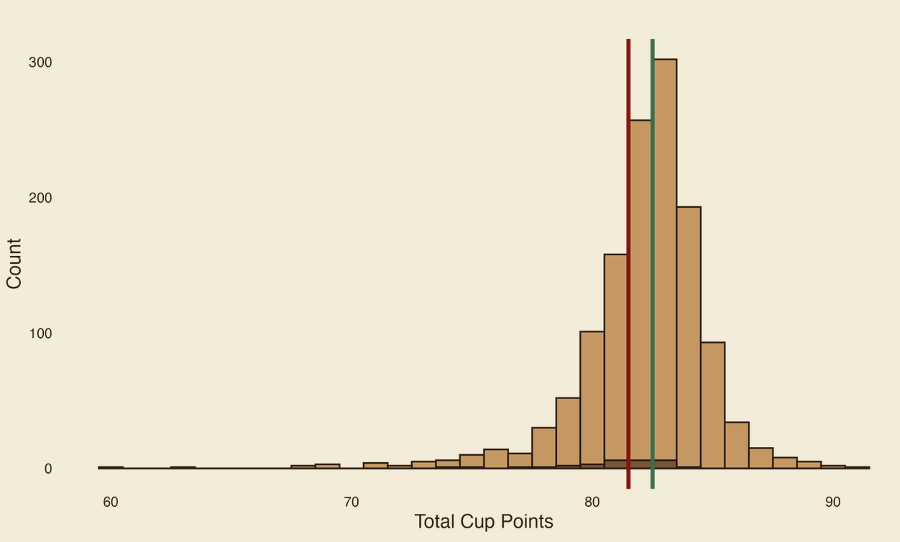
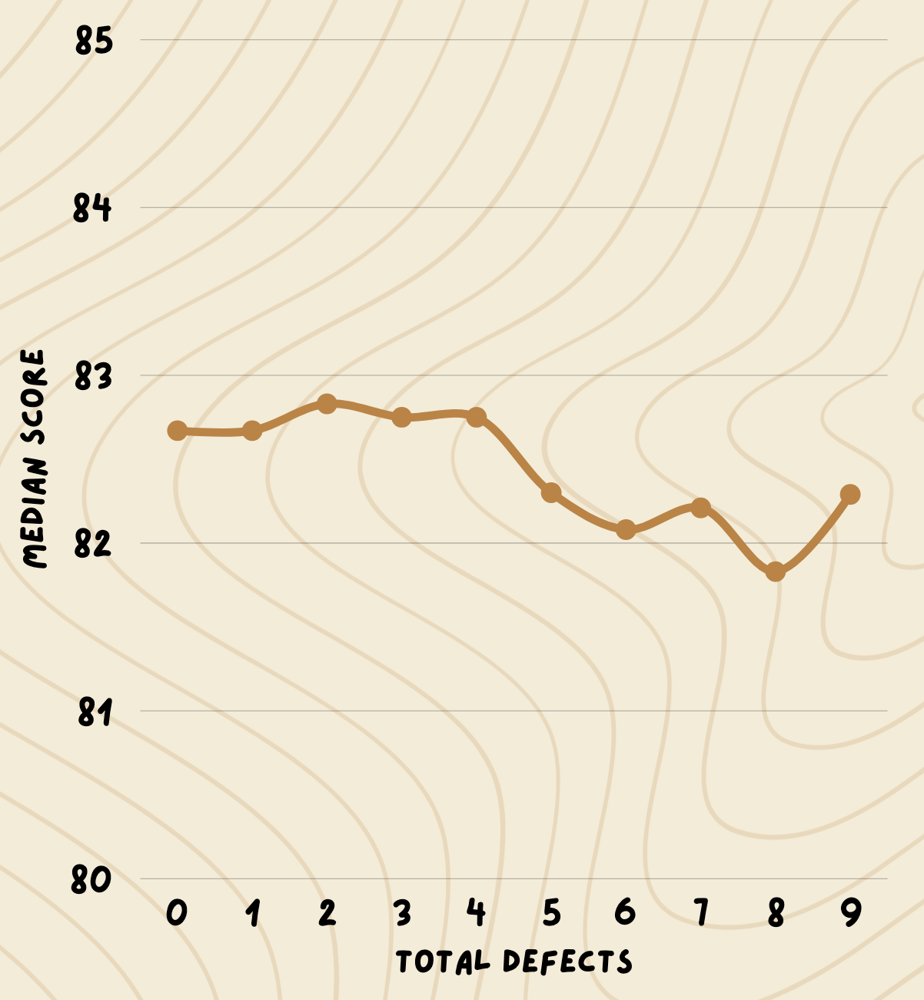
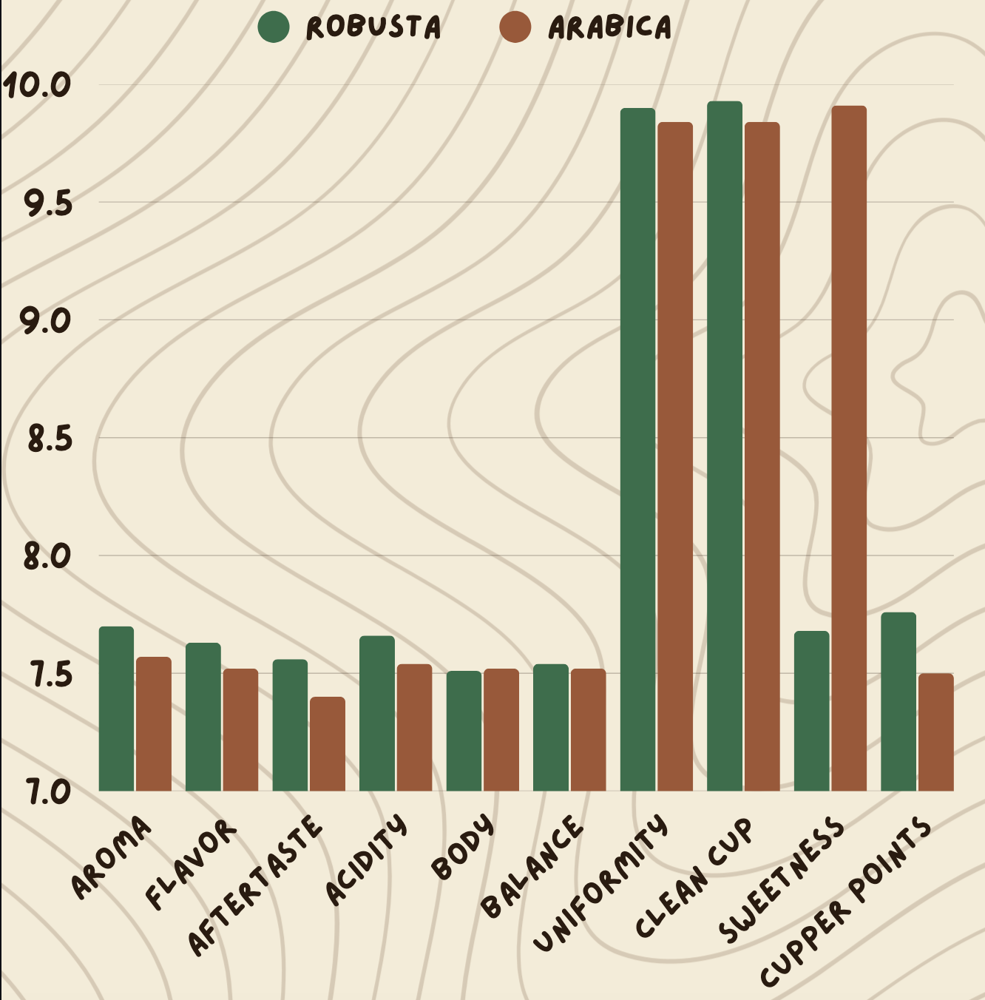

Data Visualization · Exploratory Analysis
A data storytelling project analyzing 1,300+ professionally rated coffees to explore which attributes, origins, and processing methods are associated with higher quality scores.
Background
This project was a departure from my usual policy and resilience work, a chance to practice data storytelling and visual analytics on a completely different subject. I used the Coffee Ratings dataset from the Coffee Quality Institute, which scores coffees on ten individual attributes (aroma, flavor, aftertaste, acidity, body, balance, uniformity, clean cup, sweetness, and cupper points) that combine into a single Total Cup Points score out of 100.
Research Question: What factors most influence the overall quality rating of coffee, and are there meaningful patterns across coffee variables that help explain variation in cup scores?
Methods
After cleaning the dataset in R (removing missing or zero-score entries), I explored the distribution of scores overall and by species, then broke quality down by processing method, country of origin, and physical defect count. R handled the statistical summaries and the primary histogram; supplementary charts and the final interactive presentation were built in Canva to make the findings more approachable for a general audience.
Key Findings
Arabica coffees, which make up 98% of the sample (1,309 of 1,337), scored consistently higher on average than Robusta. Among processing methods, naturally/dry processed coffees had the highest median score (82.75), edging out washed coffees (82.42) despite washed processing being far more common (815 of the coffees in the dataset).

Looking at country of origin, Ethiopia (median 85.20, n=44) and Kenya (median 84.58, n=25) stood out among origins with a reasonably large sample size, both notably ahead of larger producers like Colombia (83.25, n=183), Guatemala (82.50, n=181), and Brazil (82.42, n=132).

The most counterintuitive finding came from comparing physical defect counts to Total Cup Points: coffees with zero defects and coffees with nine defects landed within about a point of each other, and the relationship isn't even consistently downward in between. Physical imperfections in the raw bean apparently tell you very little about how the coffee will actually taste. Sensory quality and visible defect count are largely decoupled in this dataset.

Takeaways
Three things stood out working through this analysis. First, Arabica's overall edge over Robusta is not as broad as the headline number suggests: attribute by attribute, Robusta actually wins on most individual measures, and Arabica's advantage comes down almost entirely to Sweetness. That is a good reminder that an aggregate score can mask a much more specific story underneath. Second, processing method and origin are legitimate quality signals worth taking seriously, consistent with common coffee industry wisdom. Third, and most surprising, physical defect counts are a weak predictor of taste quality, which suggests that visual grading criteria and sensory grading criteria are measuring genuinely different things, not just proxies for the same underlying quality.
Limitations & Next Steps
Several countries and processing methods in the dataset have very small sample sizes, so their high or low median scores should be read cautiously rather than as strong signals. The dataset also doesn't capture price, growing altitude, or roast date, all of which likely interact with the attributes analyzed here. A natural next step would be a multivariate model isolating the independent effect of species, processing method, and origin on score, controlling for sample size imbalances across categories.
Full Site
The full data storytelling experience, including all supplementary charts and tables, is built out as an interactive site in Canva. Explore it below or open it directly.